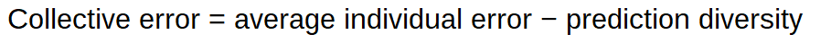

The Science of Everyday Thinking
EdX course UQx Think101xThe Science of Everyday Thinking
Think Twice (harnessing the power of counterintuition)
Wisdom of the crowd and the algorithm
Wisdom of the crowd

The diversity prediction theorem tells us that a diverse crowd will always predict more accurately than the average person in the crowd. Not sometimes. Always. This suggests that modesty is in order, but most people do not think of themselves as average---and certainly not as below average. Yet in reality, half of all people must be below average, and so you should sort out when you are likely to be one of them.
Also important is that collective accuracy is equal parts ability and diversity. You can reduce the collective error either by increasing ability or by increasing diversity. Both ability and diversity are essential.
With the diversity prediction theorem in hand, we can flesh out when crowds predict well. Three conditions must be in place: diversity (diverse set of opinions), aggregation (everyone's information), and incentives (make good predictions).
Loss of diversity usually stems from a dominant leader, an absence of facts, or cognitive homogeneity in the group. Without diversity, collectives large or small can be wildly off the mark.
Causation vs. correlation
Three conditions must hold to make a claim that X causes Y.
-
X must occur before Y.
-
functional relationship between X and Y, including the requirement that cause and effect take on two or more values. For example, the statement "smoking causes lung cancer". A scientist must consider all the relationships between the variables: does the person smoke (yes or no) and does the person have cancer (yes or no).
-
there cannot be a factor Z that causes both X and Y.
Regression to the mean:
-
Notice that a beginner would be more likely to regress towards the > mean than an expert, because regression towards the mean is most > apparent when there is lots of randomness or 'noise' in a > measurement.
-
Remember that subsequent performance tends not to be as extreme as > initially observed extreme scores, and there\'s greater regression > with less precise measurement. There are two extremes:
-
At one extreme, predict complete regression to the mean. You\'re > saying that any deviation from the mean in the first sample is > just chance, like the coin flipping students who don\'t understand > English.
-
At the other extreme, if you have a perfect predictor (a measurement > with no error in it), predict no regression: the next score is > just as extreme as the last.
-
Most of the time, we are dealing with imperfect predictors, so we > would expect regression between these two extremes.
-
even as reversion to the mean occurs from one generation to the > next, the overall distribution of heights remains stable over > time.
Avoid regression to the mean errors:
-
Evaluate the mix of skill and luck in the system that you are analyzing. (skill = if you can lose on purpose)
-
Carefully consider the sample size. (The more that luck contributes to the outcomes you observe, the larger the sample you will need to distinguish between skill and luck. In addition, when a large number of people participate in an activity that is influenced by chance, some of them will succeed by sheer luck.
-
Streaks are good indicators of skill in a field. Since streaks > require both skill and luck. For instance, a basketball player who > makes 60 percent of her shots has about a 7.8 percent chance > (0.6)^5^ of making five in a row. A player who makes 40 percent of > his shots has only a 1 percent chance (0.4)^5^ of hitting five in > a row. The best players have more streaks than the worst players, > just as you would expect, given the statistics.
-
Watch for change within the system or of the system.
Halo effect
The halo effect (sometimes called the halo error) is the tendency for positive impressions of a person, company, brand or product in one area to positively influence one\'s opinion or feelings in other areas.
A whole cottage industry, including business school professors and consultants, is working hard to offer businesspeople tidy solutions for their problems. Here's how you grow sales. Here's how you innovate. Here's how you manage your people. But any time you see an approach offering secrets, formulas, rules, or attributes to achieve success, you can be sure that someone is selling you a nostrum
For example, Rosenzweig suggests that the press will praise a company that is doing well for having "a sound strategy, a visionary leader, motivated employees, an excellent customer orientation, a vibrant culture, and so on." But if the company's performance subsequently reverts to the mean, onlookers will conclude all of those features went wrong, when in reality nothing of the sort happened. In many cases, the same people are running the same business with the same strategy. Mean reversion shapes company performance, which in turn manipulates perception.
Inside vs. outside view
Whereas the inside view attempts to make predictions based on an understanding of the details of a problem, the outside view---also called reference class forecasting---instead looks at similar past situations and predicts based on those outcomes.
The main lesson from the inside-outside view is that while decision makers tend to dwell on uniqueness, the best decisions often derive from sameness.
The outside view asks if there are similar situations that can provide a statistical basis for making a decision. Rather than seeing a problem as unique, the outside view wants to know if others have faced comparable problems and, if so, what happened.
People who believe that they have some control have the perception that their odds of success are better than they actually are. People who don't have a sense of control don't experience the same bias
Mergers and acquisition example
The problem is that most deals don't create value for the shareholders of the acquiring company (shareholders of the companies that are bought do fine, on average). In fact, researchers estimate that when one company buys another, the acquiring company's stock goes down roughly two-thirds of the time.^1^
The Plural of Anecdote Is Not Evidence
If you want to know how something is going to turn out for you, look at how it turned out for others in the situation. The reason most people don't use this approach is that they think of themselves different, and better, than those around them.
How to use the outside view:
-
Select a reference class. Find a group of situations, or a reference class, that is broad enough to be statistically significant but narrow enough to be useful in analyzing the decision that you face.
-
Assess the distribution of outcomes. Once you have a reference class, take a close look at the rate of success and failure. The statistical rate of success and failure must be reasonably stable over time for a reference class to be valid. If the properties of the system change, drawing inference from past data can be misleading.
-
Make a prediction. With the data from your reference class in hand, including an awareness of the distribution of outcomes, you are in a position to make a forecast.
-
Assess the reliability of your prediction and fine-tune. How good we are at making decisions depends a great deal on what we are trying to predict. Weather forecasters, for instance, do a pretty good job of predicting what the temperature will be tomorrow. Book publishers, on the other hand, are poor at picking winners, with the exception of those books from a handful of best-selling authors. The worse the record of successful prediction is, the more you should adjust your prediction toward the mean (or other relevant statistical measure).
Insufficient consideration of alternatives
You can call it tunnel vision. Failure to entertain options or possibilities can lead to dire consequences, from a missed medical diagnosis to unwarranted confidence in a financial model. Incentives are a strong contributor to tunnel vision.
Anchoring: In deciding, people often start with a specific piece of information or trait (anchor) and adjust as necessary to come up with a final answer. The bias is for people to make insufficient adjustments from the anchor, leading to off-the-mark responses. Systematically, the final answer leans too close to the anchor, whether or not the anchor is sensible.
How do you avoid the tunnel vision trap? Here's a five-point checklist:
-
Explicitly consider alternatives. You should examine a full range of alternatives, using base rates or market-derived guidelines when appropriate to mitigate the influence of the representativeness or availability biases.
Know your best alternative to a negotiated agreement, your walkaway price, and the same two sums for the party across the table. These figures allow you to improve the odds of an advantageous deal and to avoid
-
Seek dissent. Much easier said than done, the idea is to prove your views wrong. There are a couple of techniques. The first is to ask questions that could elicit answers that might contradict your own views. Then listen carefully to the answers.
-
Keep track of previous decisions. Life must be understood backwards ...But it must be lived---forwards. Write down the rationale behind decisions and to consistently revisit past actions.
-
Avoid making decisions while at emotional extremes. Whenever possible, try to postpone important decisions if you feel at an emotional extreme.
-
Understand incentives. Consider carefully what incentives exist, and what behaviors the incentives might motivate.
Intuition
People become experts by using deliberate practice to train their experiential systems. Deliberate practice has a very specific meaning: it includes activities designed to improve performance, has repeatable tasks, incorporates high-quality feedback, and is not much fun.
Intuition therefore works well in stable environments, where conditions remain largely unchanged (e.g., the chess board and pieces), where feedback is clear, and where cause-and-effect relationships are linear. Intuition fails when you are dealing with a changing system, especially one that has phase transitions. Despite its near-magical connotation, intuition is losing relevance in an increasingly complex world.
Situation trumps disposition
Also see Fundamental attribution error
Don't underestimate the impact of the situation over people's personality. We selectively attend to what people are doing or saying rather than the context and we don't have many labels for situations that prompt certain behaviours. If you expose people to situations, usually novel situations under well-controlled circumstances and, to some extent, even if you observe them in their day-to-day life, the degree of cross-situational consistency in behavior is relatively low.
If you want people something to do make the situation comfortable, easy, and suitable for them (e.g. pre-filling forms, people might avoid to help not because they are necessarily bad but just because they were in a hurry).
Make use of channel factors, an aspect of the situation that bridges between an intention and action and has a major impact on behavior.
Some of the greatest atrocities known to mankind resulted from putting normal people into bad situations. While we all like to believe that our choices are largely independent of our circumstances, the evidence strongly suggests otherwise.
Decisions are usually not independent of the situation, context, experience.
Here are some ideas to help you cope with the power of the situation
- Be aware of your situation.
There is the conscious element, where you can create a positive environment for decision making in your own surroundings by focusing on process, keeping stress to an acceptable level.
Then there is coping with the subconscious influences. Control over these influences requires awareness of the influence, motivation to deal with it, and the willingness to devote attention to address possible poor decisions.
-
Consider the situation first and the individual second
-
Watch out for the institutional imperative. tendency of organizations to "mindlessly" imitate what peers are doing. There are typically two underlying drivers wanting to be part of the in-group, second incentives
-
Avoid inertia (resistance to change). Periodically revisit your processes and ask whether they are serving their purpose.
Complex Adaptive Systems---The Whole Is Smarter Than Its Parts
In complex adaptive systems, there is no simple method for understanding the whole by studying the parts, so searching for simple agent-level causes of system-level effects is useless.
Just as watching one bee won't help you understand the hive's behavior, listening to individual investors will give you scant insight into the market.^10^
I have explained to executives countless times that the opinion of the market is far more relevant than the utterances of individuals. By studying the market, we can get a much better sense of how various decisions affect economic value than we can by listening to partially informed individuals
You and I both might be irrationally overconfident, for example, but if you are an overconfident buyer and I am an overconfident seller, our biases may cancel out. In dealing with systems, the collective behavior matters more. You must carefully consider the unit of analysis to make a proper decision.
Misc
People usually get more drunk if they usually drink in the evening and drink once during lunch. People usually don't die of an overdose of a drug, but because they take it in unusual circumstances. The body prepares in anticipation of the drug. This is to keep homeostasis, a stable narrow range of conditions the body can survive in.
Pupil expands by 30-40% if you are involved in a mental task (conscious effort). In addition to the effect that the pupil gets larger when in the dark.
For experts processing switching from System 2 to System 1 from consciousness mental effort to unconscious pattern matching (e.g. doctors seeing scans and making a diagnosis). They are learning things through conscious effort and then through practice in combination with rapid feedback they can perform the processing through System 1.
Skill vs luck

The main lesson is that feedback should focus on the part of the outcome a person can control. Call it the skill part, or the process. Feedback based only on outcomes is nearly useless if it fails to distinguish between skill and luck.
For instance, a basketball player who makes 60 percent of her shots has about a 7.8 percent chance (0.6)5 of making five in a row. A player who makes 40 percent of his shots has only a 1 percent chance (0.4)5 of hitting five in a row. The best players have more streaks than the worst players, just as you would expect, given the statistics.
Streaks, continuous success in a particular activity, require large doses of skill and luck. In fact, a streak is one of the best indicators of skill in a field. Luck alone can't carry a streak. My analysis of various sports streaks in basketball and baseball clearly suggests streak holders are among the most skilled in their fields.
Experiment and find things out
-
Question assumptions
-
The law of large numbers says that with a large enough denominator---in other words, in a big wide world---stuff will happen, even very weird stuff. \"The really unusual day would be one where nothing unusual happens,\"
-
Be methodical and careful about moving through the process of answering a question.
-
Try to isolate the variables that they think will be important that will make good predictions.
-
Test things by using controlled experiments (only change one variable at the time and control the others)
-
When testing a claim, you need to decide what level of performance would convince you that there is a genuine effect.
-
Be willing to find evidence that is against what you believe and be willing to change your opinion based on better evidence to the contrary.
-
Define what it is that you really believe in.
-
How well based is the opinion that I hold? What is the evidence?
-
Does the new evidence contradict my opinion/belief?
-
If the current evidence is insufficient to make you change your > mind, which evidence would be?
-
What is the cost/benefit of changing my opinion?
-
Less (contextual) information can sometimes lead to better outcomes. E.g. a teacher grading exams can better grade when he doesn't know the student he's grading.
How to learn
-
Interleaving: Mixing up learning and quizzes from across different topics/chapters.
-
Associate new knowledge with existing. Having more knowledge in a domain will make it easier.
-
Write summaries instead of highlighting or copy and paste.
-
Retrieval/quizzing instead of re-reading. Make it more difficult will pay off in the long run (desirable difficulties). Current/short term performance does not reflect learning effectiveness well. If something goes down easy we usually misinterpret that ease with understanding.
-
Practice and apply the knowledge in different domains.
-
Spaced learning/recalling instead of cramming.(flash cards). Cramming might work to ace an exam but is not good for long term retention of the information.
-
Make use of your unconscious by spending a few minutes, think about what the problem is, how you\'re going to get this thing across, it\'s been handed over to the unconscious and the unconscious. (think what is the best I want to get out of this meeting or conversation)
Illusions and Biases
Overly relying on past successes
After a success, we become overly optimistic risk-takers. After a failure, we become overly pessimistic and risk-averse even in cases where success or failure was merely a result of chance. Good consequences don\'t necessarily mean we made a good decision, and bad consequences don\'t necessarily mean we made a bad decision. []{#_Fundamental_attribution_error .anchor}This automatic association to what worked in the past causes people to under-react to new conditions and circumstances.
Comparing relatives or gradual changes instead of absolutes
In one experiment, a group of people was asked to choose between \$6 and an elegant pen. Most choose the cash. Another group of people was asked to choose between \$6, the elegant pen, or an inferior pen. Most choose the elegant pen. By adding an inferior option, another option seemed more attractive.
Evaluate people and objects by themselves and not by their contrast.
Representativeness bias "Don't judge a book by its cover"
Encouraging us to remain open to options even as our mind seeks to shut them down. In this case, the doctor's error was to rule out a heart attack because the patient appeared to be a model of health and fitness. "You have to be prepared in your mind for the atypical and not so quickly reassure yourself, and the patient, that everything is okay,"
Think carefully about how the representativeness and availability heuristics may impose on your decisions. Have you ever judged someone solely based on how he or she looks? Have you ever feared flying more after hearing of a plane crash? If the answer is yes, you are a normal human. But you also risk misunderstanding, or missing altogether, plausible outcomes.
Is the Trend Your Friend?
This mistake is tough because our minds have a deep-seated desire to make out patterns and our prediction process is very rapid (the researchers call it "automatic and obligatory"). This pattern recognition ability evolved through the millennia and was profoundly useful for most of human existence. "In a natural environment, almost all patterns are predictive," but these causal relationships don't necessarily hold in the technological world.
We can restate the problem of induction as inappropriately projecting into the future, based on a limited number of observations. Failure to reflect reversion to the mean is the result of extrapolating earlier performance into the future without giving proper weight to the role of chance. Models based on past results forecast in the belief that the future will be characteristically similar to history.
Fundamental attribution error
[Underestimate the impact of the situation.]{.mark} (Personality is not a good predictor for future behaviour since it's usually more dependent on the circumstances or the situation. E.g. people are more likely to help if they are not in a hurry. We tend to focus too much on the actor rather than the situation.
[We way overestimate our own individuality (e.g. if the movie has a 95% rating you are most likely going to like it too).]{.underline}
[We readily think that when people disagree with us, it\'s because there\'s something wrong with them, not something wrong with us, or at least not something that\'s affecting both of us that\'s making us simply disagree.]{.underline}

We judge others by their actions and ourselves by our intentions.

Fundamental cognitive error
Failure to recognize the extent to which our interpretations are shaped by our prior knowledge and experiences.
Cognitive dissonance

Cognitive dissonance is one facet of our next mistake, the rigidity that comes with the innate human desire to be internally and externally consistent. Cognitive dissonance, a theory developed in the 1950s by Leon Festinger, a social psychologist, arises when "a person holds two cognitions---ideas, attitudes, beliefs, opinions---that are psychologically inconsistent."15 The dissonance causes mental discomfort that our minds seek to reduce. Many times we resolve the discomfort by figuring out how to justify our actions (self justification).
Penny-wise and dollar foolish
Describes focusing on short-term goals rather than long term benefits due to stress responses.
Must be in the middle heuristic
I.e. there is a bit of truth in both sides. Many times this is not the case. For example if 99% of scientists support the idea that climate change is mainly caused by humans and someone with the opposite opinion discusses the topic the climate change denier is very much over represented.
Post hoc ergo propter hoc
.. is an informal fallacy that states: \"Since event Y followed event X, event Y must have been caused by event X.\" Correlation vs. causation.
Multiple-endpoints fallacy
Ray and his brother, Robert, are having a little competition over who can be the first to toss a kernel of popcorn into a bowl. They alternate tosses for a while, both of them consistently failing. Eventually, Robert grabs a double handful of popcorn and tosses it at the bowl. A few fall in, and he immediately claims victory.\ \ Breaking it down, here\'s what happens: At first, they try to throw the popcorn in individually. This has a single endpoint of success: that the popcorn goes in. Then Robert throws a bunch at once. This has multiple successful endpoints: one for each individual kernel going in. A few of these go in, so Robert claims success. He points to the endpoints he reached and used those declare victory.\ \ Simply put, the multiple endpoints phenomenon describes how if you have a specific measure for success, it\'s hard to achieve it, but the more you generalize it, the easier it gets. What you have to watch out for is people who act like they had a specific measure when in fact they were going from more generalized criteria.
If you\'re observing 500 such counties, then every year that will happen to some one of them. You just never notice the 499 data points where it didn\'t.
Gambler's fallacy
.. is the incorrect belief that, if a particular event occurs more
frequently than normal during the past, it is less likely to happen in
the future (or vice versa), when it has otherwise been established that
the probability of such events does not depend on what has happened in
the
past.
Availability bias
A distortion that arises from the use of information, which is most readily available, rather than that which is necessarily most representative. (e.g., what is currently overrepresented in the media vs. actual most common causes)
End-point bias
A tendency to interpret a recent short-term fluctuation as a reversal of a long-term trend.
Representative bias
Judge the frequency or likelihood of an event by the extent to which it resembles the typical case. Linda the feminist bank teller.

Sales people might use of the anchoring effect by offering an extremely high price at the beginning.
Consider choices from a zero base level and remember what you want to achieve.
Misc
Our memories don't work like a tape or video recorder.
We are constantly making interpretations of what we perceive based the sum of our previous experiences. It doesn\'t really make sense to talk about things objectively as seeing objects and events as they are in the world instead of being filtered by our own experiences.
Memories of things change over time. Memories for the details of events can be transformed or distorted with misinformation.
Make use of your unconscious by spending a few minutes, think about what the problem is, how you\'re going to get this thing across, it\'s been handed over to the unconscious and the unconscious. (think what is the best I want to get out of this meeting or conversation)
We are also not good at assessing our own skill level (are you in bottom or top half of ...)
We are influenced by factors that we are not aware of (e.g., fishy smell makes us more suspicious)
We don\'t have any real privileged access to our own memory, own perception, and the determinants of our own behavior. (We don't know why we do things, nor are we good at interpreting our prediction whether and why we like things or made choices). Usually, we overestimate the duration of negative effects, unpleasantness only lasts for a small length of time. We underestimate how good our internal coping mechanisms work and how well we can adapt.
The brain structure is more analogous to a scaffold (the more structure you put up the more places you have to place things) rather than computer storage.
The idea is that it\'s really difficult to put yourself in the shoes or see things from the perspective of other people (recognizing the tapping a familiar song).
Music being played backwards with subliminal messages (Judas Priest).
People tend to see patterns where there are no patterns or see things that are actually not there.
Randomness doesn't mean that events don't occur in runs. It's normal that random events cluster (e.g. 6 heads in a row).
Health Claims
There is not much evidence of physiological effects of the placebo, but it is mainly based on reported feeling of people (pain and depression). Many of the effects of alternative medicine or placebos can be explained by the regression to the mean effect. When people take the treatments, they are usually at an extreme point and there is a natural tendency to go back to a better normal/average state. When looking for a placebo effect you need to test with a group that gets the drug, a group that gets the placebo and a group that gets no treatment.
Cochrane library to check for tested alternative medicines or treatments
2 Way contingency table to consider alternative causes/explanations for treatments/outcomes:
| Outcome | Yes | No |
|---|---|---|
| Prediction | ||
| Yes | Predicted yes and it yes | Predicted yes and it was no (false positive very common to avoid big negative consequences like not diagnosing appendix conditions) |
| No | Predicted no and it was yes (not common since it is avoided by false positives |
Predicted no and it is no |